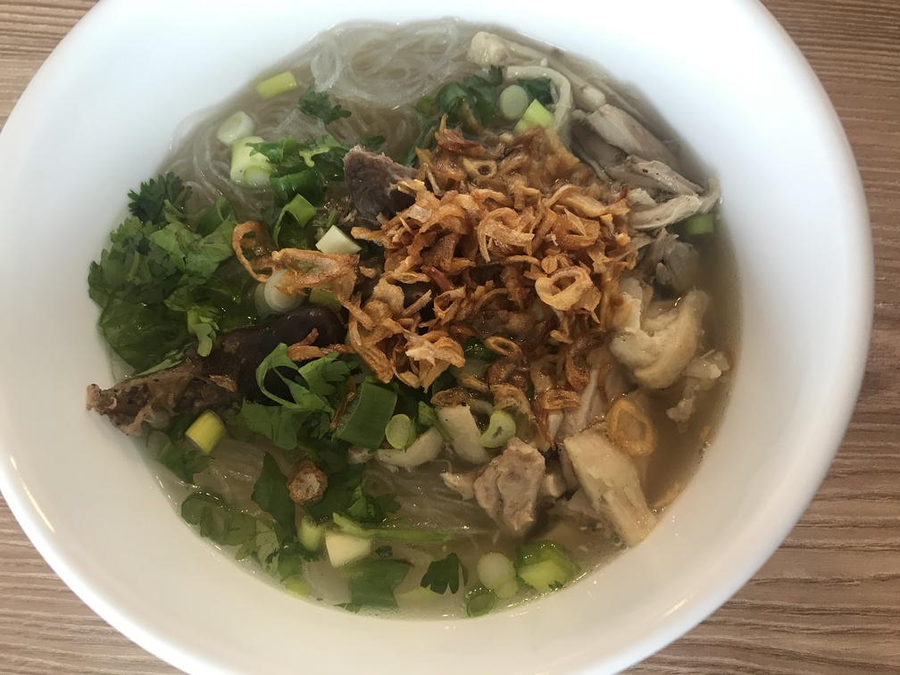

| Other | Meat | Veggie | Fruit |
|---|---|---|---|
| fish sauce | chicken bones | cilantro | |
| mien | chicken feet | dried fungus mushroom | |
| msg | chicken gizzard | garlic | |
| pepper | chicken thigh | ginger | |
| salt | green onions | ||
| sugar | hanh kho | ||
| wonton soup base | shallot | ||
| vietnamese coriander | |||
| yellow onion |
| instructions |
|---|
| Make broth according to broth recipe with chicken parts and aromatics (onion, shallot, garlic, ginger, mushrooms) |
| Add fish sauce/salt and sugar at a 2 salty : 1 sweet ratio, adjust to taste with wonton soup base, msg , and pepper |
| Remove chicken parts at appropriate internal temperature and shred to pieces |
| Eat with mien, chicken, minced herbs, and hanh kho |